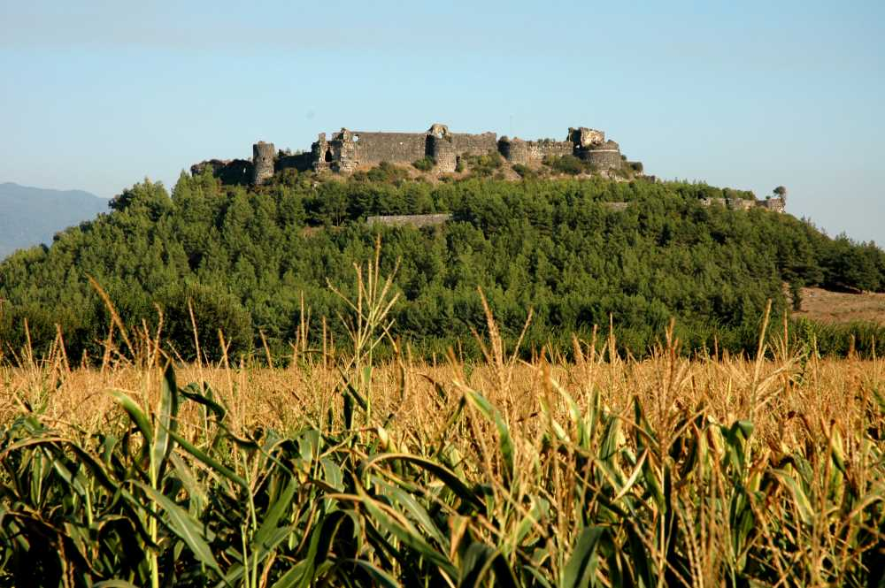
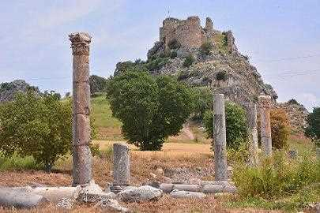
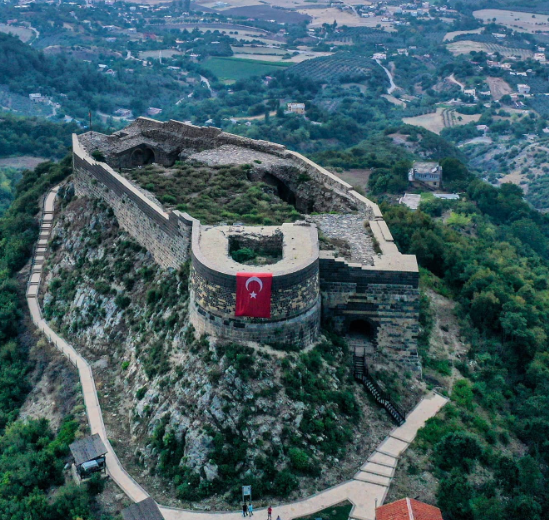
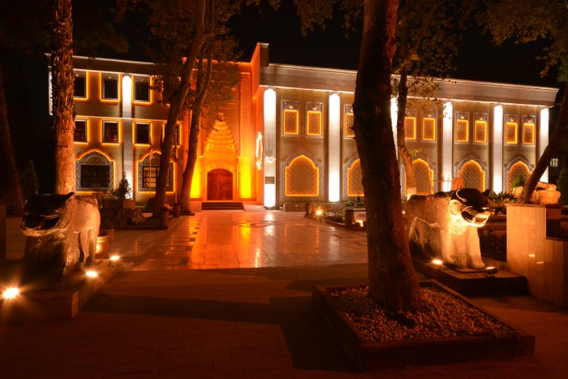
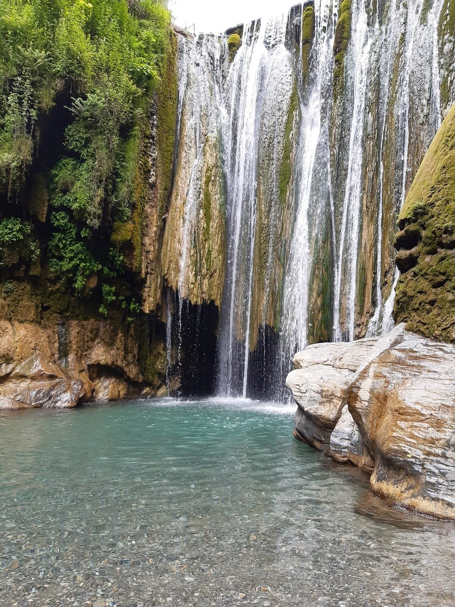

Osmaniye Kaleleri ve Tarihçesi
Osmaniye, stratejik konumu nedeniyle tarih boyunca adeta bir kaleler üssü olmuştur. Şehirde irili ufaklı çok sayıda kale yer alır.
Toprakkale Kalesi
Osmaniye-Adana yol ayrımında, ovaya hakim bir tepe üzerinde kurulu olan kale, aslen Abbasi halifesi Harun Reşid döneminde yapılmıştır. Siyah bazalt taşlardan inşa edilen kale, dikdörtgen planlı yapısıyla günümüze kadar oldukça sağlam ulaşmıştır.

Kastabala Kalesi (Bodrumkale)
Antik Hierapolis-Kastabala kenti kalıntılarının hemen arkasındaki sarp bir kayalık üzerine kurulmuştur. Orta Çağ'dan kalma bu kale, altındaki antik tiyatro ve sütunlu yol manzarasıyla muhteşem bir tarih sunar.

Harun Reşit Kalesi
Osmaniye'nin Düziçi ilçesinde, Amanos Dağları'nın eteklerinde stratejik bir tepe üzerinde yer alan kale, 799 yılında Abbasi Halifesi Harun Reşid'in uç beyi tarafından inşa edilmiştir. Bölgedeki siyah bazalt taşların mimariye yön verdiği bu tarihi yapı, sarp kayalıklar üzerine kurulu heybetli burçlarıyla günümüze kadar oldukça sağlam bir şekilde ulaşmayı başarmıştır. Horasan harcı kullanılarak yapılan kale, tarih boyunca sınır güvenliğini sağlamak ve bölgedeki önemli geçiş yollarını denetlemek amacıyla önemli bir askeri üs olarak kullanılmıştır. Günümüzde ise yemyeşil doğanın içindeki muhteşem manzarasıyla Düziçi'nin ve Osmaniye'nin en önemli tarihi simgelerinden biri olarak turizme hizmet etmektedir.

Müzeler: Karatepe Aslantaş Müzesi
Osmaniye, Türkiye'nin ilk açık hava müzesine ev sahipliği yapmaktadır.
Karatepe Aslantaş Açık Hava Müzesi
Geç Hitit döneminde (M.Ö. 8. yüzyıl) sınır kalesi olarak kurulan bu alanda, aslan başlı kabartmalar, dikili taşlar ve ünlü Hitit hiyeroglif yazıtları yer alır. Burası, Hitit yazılarının çözülmesinde kilit rol oynamış dünyaca ünlü arkeolojik bir merkezdir.

Kent Müzesi
Kent merkezinde yer alan müze, eski Çukurova mimarisini yansıtan tarihi binası ve zengin etnografik koleksiyonuyla Osmaniye’nin geçmişten günümüze sosyal, kültürel ve ekonomik hafızasını barındırmaktadır.

Doğa Harikası: Şelaleler
Osmaniye, Amanos Dağları'nın sunduğu zengin su kaynakları sayesinde muhteşem doğa harikası şelalelere sahiptir.
Karaçay Şelalesi
Şehir merkezine oldukça yakın olan Karaçay Deresi'nin dik yamaçlardan aşağı dökülmesiyle oluşur. Etrafındaki yürüyüş parkurları ve yeşil doğasıyla hem yerli halkın hem de turistlerin vazgeçilmez kaçış noktasıdır.

Sabun Şelalesi
Osmaniye'nin Düziçi ilçesinde yer alan Sabun Çayı Şelalesi, Amanos Dağları'ndan gelen buz gibi suların sarp kayalıklardan dökülmesiyle oluşan eşsiz bir doğa harikasıdır. Etrafını saran zengin bitki örtüsü, doğal yürüyüş parkurları ve huzur veren su sesiyle hem yerli halkın hem de doğaseverlerin bölgedeki en önemli kaçış noktalarından biridir.
